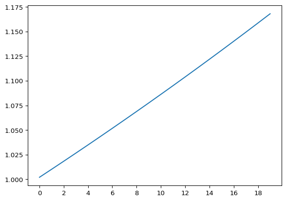
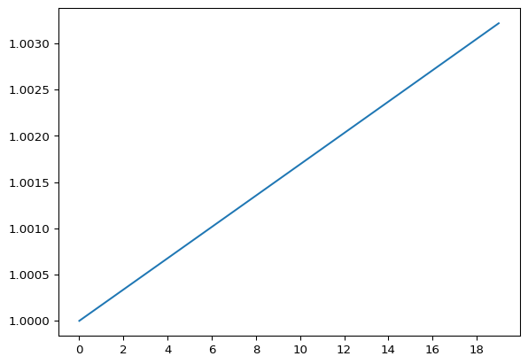

import numpy as np
import matplotlib.pyplot as plt
class IndexMixin:
def laspeyres(self, p1: np.ndarray, p0: np.ndarray) -> float:
q0 = self.demand(p0)
return np.sum(p1 * q0) / np.sum(p0 * q0)
def paasche(self, p1: np.ndarray, p0: np.ndarray) -> float:
q1 = self.demand(p1)
return np.sum(p1 * q1) / np.sum(p0 * q1)
def fisher(self, p1: np.ndarray, p0: np.ndarray) -> float:
laspeyres = self.laspeyres(p1, p0)
paasche = self.paasche(p1, p0)
return np.sqrt(laspeyres * paasche)
class CobbDouglas(IndexMixin):
def __init__(self, alpha: np.ndarray, m: float):
self._alpha = np.asarray(alpha, dtype=np.float64)
self._alpha /= np.sum(self._alpha)
self._m = float(m)
def demand(self, p: np.ndarray) -> np.ndarray:
if len(p) != len(self._alpha):
raise ValueError(f"must supply prices for {len(self._alpha)} products")
return self._alpha * self._m / pWhat causes inflation?
Index numbers
Python
Long-term inflation requires something that increase prices and grow without bound (i.e., money supply). I show that the way that inflation is measured can itself be a source of inflation.
What causes inflation in prices over time? Increases in the money supply, of course. Although there are many reasons for increasing prices over time, money supply is one of the few things that can do so and grow without bound. Case closed, right? Not quite.
In practice we can’t perfectly observe how prices change over time and instead we must measure inflation with an index number. Ignoring all the details that arise in practice, the goal is usually to construct a chained Laspeyres or Fisher index. There’s a nice disclaimer in the CPI manual about potential issues with these formulas when prices bounce or oscillate, rather than grow monotonically (IMF et al. 2025, 24). What I want to show here is that this can be a source of perpetual inflation. This means that, for example, increases and decreases in market concentration over time, which would result in fluctuating prices, can result a price index measuring inflation, even when prices don’t cumulatively change over time.
Setup
Let’s start with a simple two-commodity model where a representative consumer has Cobb-Douglas preferences. We’ll make a small class and mixin to make a Laspeyres and Fisher index given prices based on these preferences.
We’ll also make a function to oscillate prices. The idea is to form a chain of index values that starts with both products having a price of [1, 1], switches prices between [1, 1.1] and [1.1, 1] some number of times, and ends with prices back at [1, 1]. As a chained index is just the cumulative product of these index values, we can decompose the chained index into the product of the first and last change in price, and the product of the oscillations. What’s necessary to drive inflation is that the product of the oscillations is greater than 1.
We’ll also make a second function that does a more complex oscillation that we’ll use later.
def bounce(index) -> tuple[np.float64]:
initial = [1, 1]
p1 = [1, 1.1]
p2 = [1.1, 1]
i = index(p1, initial) * index(initial, p1)
b = index(p2, p1) * index(p1, p2)
return i, b
def bounce2(index) -> tuple[np.float64]:
initial = [1, 1]
p1 = [1, 1.1]
p2 = [1.2, 1]
p3 = [1.1, 1]
i = index(p1, initial) * index(initial, p1)
b = index(p2, p1) * index(p3, p2) * index(p1, p3)
return i, bInflation due to measurement
Let’s start by generating some preferences and giving our representative consumer a fixed income, then simulating how the chained Laspeyres index evolves as prices bounce around.
u = CobbDouglas([1, 2], 100)
res = bounce(u.laspeyres)
oscillate = [res[0] * res[1]**n for n in range(20)]
fig, ax = plt.subplots()
ax.plot(oscillate)
plt.xticks(range(0, 20, 2))
plt.show()
Here we see that, despite prices starting and ending at the same level, the chained Laspeyres index shows that prices have increased over time. This happens because each oscillation registers an increase in prices (about 0.8%), and these compound to show that prices are increasing over time. Note that the culprit here is the well-known substitution bias in the Laspeyres index; if there was no substitution bias then the index would be transitive with Cobb-Douglas preferences and (correctly) show no change in prices over time. Instead, this happens with Leontief preferences.
class Leontief(IndexMixin):
def __init__(self, m: float):
self._m = float(m)
def demand(self, p: np.ndarray) -> np.ndarray:
return np.repeat(self._m / np.sum(p), len(p))
bounce(Leontief(100).laspeyres)(np.float64(1.0), np.float64(1.0))Both components of the chained index—the first and last change in price and the part due to oscillations—show no change in price.
We can get the same behavior from the Fisher index, albeit with a more complex form of oscillation. (Using the simple oscillation would show no change in prices over time because the Fisher index satisfies the time-reversal property.)
res = bounce2(u.fisher)
oscillate = [res[0] * res[1] ** n for n in range(20)]
fig, ax = plt.subplots()
ax.plot(oscillate)
plt.xticks(range(0, 20, 2))
plt.show()
Each oscillation registers a 0.02% increase in prices. Note that this behavior from the Fisher index is sensitive to the parameters in the Cobb-Douglas utility function and it’s also possible to get that prices decreases over time.
u = CobbDouglas([2, 1], 100)
res = bounce2(u.fisher)
print(res)(np.float64(1.0), np.float64(0.9998308882582081))Overall, this example shows that more than just money supply can drive our measurement of inflation, even if increasing money supply is the only true cause of inflation.
References
IMF, ILO, Eurostat, UNECE, OECD, and World Bank. 2025. Consumer Price Index Manual: Theory. International Monetary Fund. https://doi.org/10.5089/9781513559605.069.
Reuse
Citation
BibTeX citation:
@online{martin2025,
author = {Martin, Steve},
title = {What Causes Inflation?},
date = {2025-10-22},
url = {https://marberts.github.io/blog/posts/2025/inflation/},
doi = {10.59350/nag8p-v2n95},
langid = {en}
}
For attribution, please cite this work as:
Martin, Steve. 2025. “What Causes Inflation?” October 22,
2025. https://doi.org/10.59350/nag8p-v2n95.